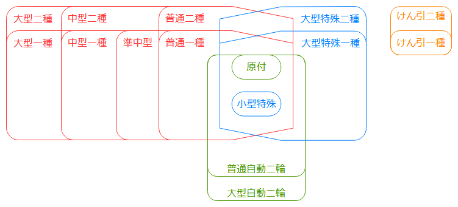
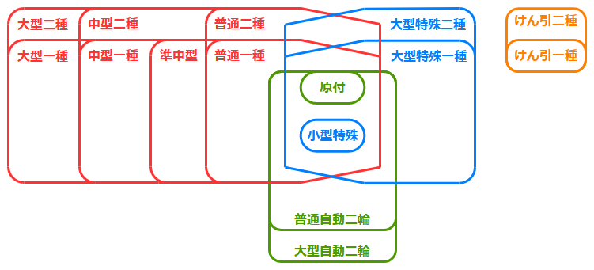
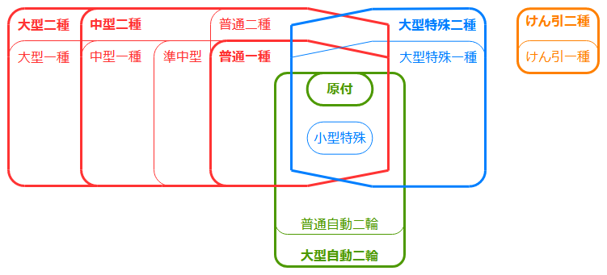

免許計画
きっかけ
どっかから回ってきた画像付きツイートで、教育訓練給付制度の存在を知る。
(元のツイートを見つけられないのでうろ覚えだが、「もう資格を取らない理由はなくなりましたね」的なやつだった)
曰く、資格を取る際の受講費用の何割かが給付金として戻ってくるとか。
「ふーん。でも、仕事で使う資格は会社に費用出してもらいたいし、個人としてはそこまで資格が欲しいわけじゃないしなぁ。」と思いながら画像を眺めていたところ、見つけてしまったね、自動車免許の文字を。
「お、自動車免許系も対象になっている！しかも 40% か～。こんなのがあるなら、昔からの夢の一つ、免許計画をそろそろ進めちゃうか！」
と言うわけで、教育訓練給付制度を使いながら免許計画を進めることにした。
免許計画が目指すもの
前提知識
上位と下位の関係
運転免許は、上位下位の関係が多い。わかりやすい例だと、普通免許で原付も運転出来るとか、大型自動二輪で普通自動二輪を運転出来るとか。
現在15種類存在する運転免許を図で表現してみると、こんな感じになる。

- 大きく分類して4系統あるので、それぞれ違う色にしている
- 赤: 四輪系(普通～大型二種)
- 緑: 二輪系(原付～大型自動二輪)
- 青: 特殊形(小型特殊～大型特殊二種)
- 橙: けん引系(けん引一種、けん引二種)
- 上位免許は下位免許を内包するように描画している
- 普通自動二輪は原付と小型特殊を含んでおり、さらなる上位に大型自動二輪がある
- 普通二種は原付、小型特殊、普通一種を含んでおり、さらなる上位に中型二種、大型二種がある
例えば、中型一種と普通自動二輪を持っていることを、文字と枠線を太くして表現すると次のようになる。太線の内側にある準中型、普通一種、原付、小型特殊も運転することが出来、逆に外側にある大型一種などは運転することが出来ない。

用語(フルビットとは、フル免許とは)
フルビット
フルビットとは、すべての免許を持っている状態である。

今とは免許の数が違うが、『こち亀』の両さんの免許がフルビットなのはそこそこ有名。
フル免許
フル免許とは、(フルビットよりは浸透した言い方ではないが) すべての車を運転出来る状態である。上位の免許を持っていれば、必ずしも下位の免許を持っていなくても良い。
例えば、原付・普通一種・中型二種・大型二種・大型自動二輪・大型特殊二種・けん引二種を所持していればフル免許状態である。

フルビットはフル免許でもあるが、フル免許がフルビットとは限らない。
(が、たまにただのフル免許のことをフルビットと呼ぶ人が居て、混乱することがある)